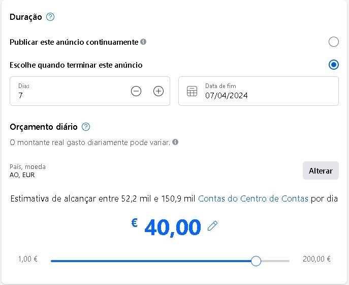
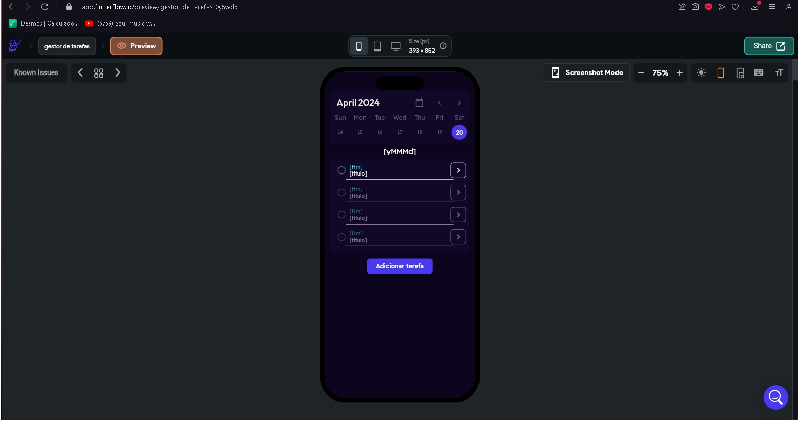
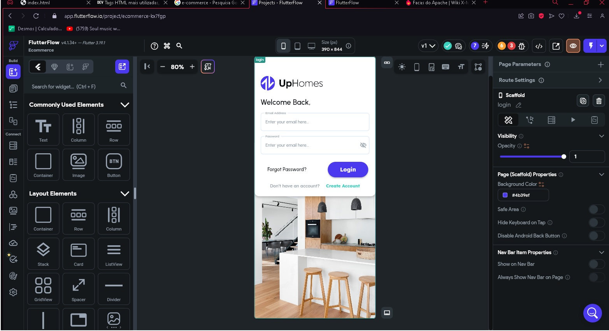
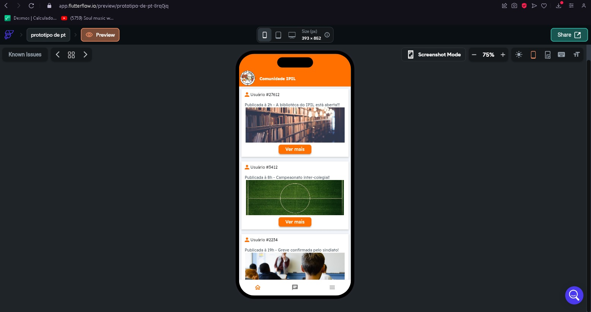

Tráfego pago refere-se ao investimento em anúncios digitais para direcionar tráfego para seu site ou página de destino, como landing pages. Diferentemente do tráfego orgânico, que depende de estratégias de marketing digital como SEO que costumam ser de longo prazo, o tráfego pago oferece resultados mais imediatos. E basicamente o que eu fiz foi usar o facebook ads da plataforma Meta, pra realizar o tráfego pago.
O gerenciamento de tarefas é o processo de monitoramento das tarefas do seu projeto por meio de seus vários estágios, do início ao fim. Isso envolve tomar decisões ativamente para que suas tarefas acomodem as alterações que podem ocorrer em tempo real. usando a plataforma flutterflow e o NoCode, eu criei um gestor de tarefas automatizado.
E-commerce, ou comércio eletrônico, é uma modalidade de negócio em que as transações comerciais são realizadas totalmente online. Desde a escolha do produto ou do serviço pelo cliente, até a finalização do pedido, com o pagamento, todo o processo deve ser realizado por meios digitais. e usando o Flutterflow eu, e a minha equipa, criamos uma app de e-commerce
são totalidades cujas estruturas específicas resultam das interações e interdependência de suas partes, então basicamente criei um projeto para a minha instituição, que se baseia num app de interação entre os alunos e professores, aonde existe até uma comunidade aonde são postadas algumas noticias sobre a instituição, e tem tambem um chat e outras coisas.
